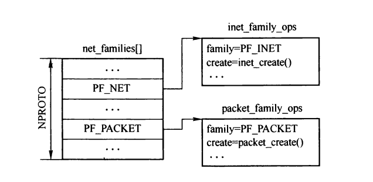
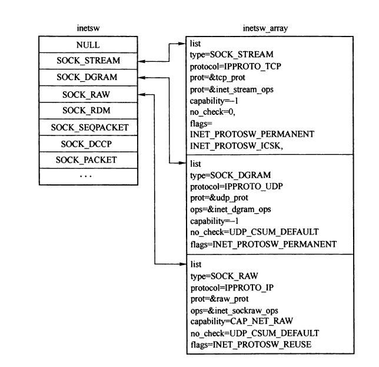
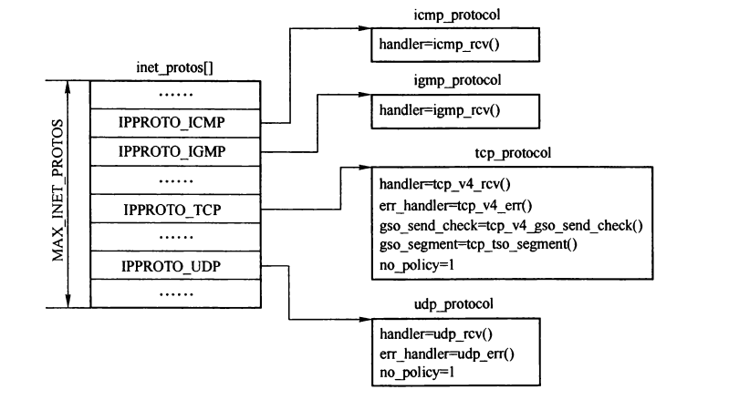

Internet 协议族
Table of Contents
Linux支持多种协议族，每个协议族用一个net_proto_family 结构的实例表示。系统初始化时，利用协议族常量作为下标，调用sock_register()将结构注册到全局数组 net_families[NPROTO] 中。此外还有一个地址族的概念，地址族常量一般和协议组常量一一对应，并且值相同。
| 协议族 | 地址族 | 协议 |
|---|---|---|
| PF_INET | AF_INET | Internet |
| PF_OSI,PF_ISO | AF_OSI,AF_ISO | OSI |
| PF_LOCAL,PF_UNIX | AF_LOCAL,AF_UNIX | 本地IPC（UNIX） |
| PF_ROUTE | AF_ROUTE | 路由表 |
| PF_LINK | AF_LINK | 链路层（例如以太网） |
1 net_proto_family结构
net_proto_family结构的实例通过 sock_register() 注册到 net_families 数组中。 不同的协议族，其传输层的结构和实现有较大差异，其套接口的创建函数也有较大区别，因此 net_proto_family 结构提供了一个协议族到套接口之间的接口。
struct net_proto_family { int family; //协议族 //协议族的套接口创建函数指针 int (*create)(struct socket *sock, int protocol); struct module *owner; };

Figure 1: net_families结构的定义
2 inet_protosw结构
每次创建套接口时，都需要使用 inet_protosw 结构。
/* This is used to register socket interfaces for IP protocols. */ struct inet_protosw { struct list_head list; //用于将type值相同的实例连接成链表 /* 以下两个字段构成查找key */ unsigned short type; /* 标识套接口类型，socket的第二个参数。对于Internet协议族包含 SOCK_STREAM SOCK_DGRAM SOCK_RAW 三种类型 */ unsigned short protocol; /* 协议族中的四层协议号，Internet协议族包括 IPPROTO_TCP、IPPROTO_UDP等 */ struct proto *prot; //套接口的网络层接口 （tcp_prot udp_prot raw_prot） const struct proto_ops *ops; //套接口传输层接口 int capability; //大于0时，需要检验进程是否具备这种能力 char no_check; //标识是否需要执行校验和 unsigned char flags; //辅助标志，用于初始化传输控制块的is_icsk成员 };
| no_check | 描述 |
|---|---|
| UDP_CSUM_NOXMIT | 表示发送时不做校验和 |
| UDP_CSUM_NORCV | 表示接收时不做校验和 |
| UDP_CSUM_DEFAULT | 表示进行正常的校验和操作 |
| flags | 描述 |
|---|---|
| INET_PROTOSW_REUSE | 标识端口能否被重用 |
| INET_PROTOSW_PERMANET | 标识协议不能被替换或者卸载 |
| INET_PROTOSW_ICSK | 标识非连接类型的套接口 |
inetsw_array数据包含三个inet_protosw结构的实例，分别对应 TCP UDP 和 RAW 套接口。在inet_init()中注册。
inet_protosw结构的实例通过 inet_register_protosw() 函数注册，使用type值作为key组织到散列表inetsw中，各协议族中type值相同而protocol值不同的实例通过list组织为链表。

Figure 2: inetsw散列表和inetsw_array数组
3 net_protocol结构
net_protocol结构定义了协议族中支持的传输层协议，以及传输层的报文接收例程。 此结构是网络层和传输层的桥梁，网络数据报在从网络层流向传输层时，调用此结构的传输层协议数据报接收处理函数。
/* This is used to register protocols. */ struct net_protocol { //传输层协议数据报接收函数指针 int (*handler)(struct sk_buff *skb); //ICMP模块中接收到差错报文后，会解析差错报文，并根据差错信息调用对应传输层的异常处理函数 void (*err_handler)(struct sk_buff *skb, u32 info); //传输层在分段之前对为首部进行校验和的计算 int (*gso_send_check)(struct sk_buff *skb); //传输层的GSO分段方法 struct sk_buff *(*gso_segment)(struct sk_buff *skb, int features); int no_policy; //标识是否进行策略路由 };
| 传输层协议 | 接收函数 |
|---|---|
| TCP | tcp_v4_rcv() |
| UDP | udp_rcv() |
| IGMP | igmp_rcv() |
| ICMP | icmp_rcv() |
| 传输层协议 | 异常处理函数 |
|---|---|
| TCP | tcp_v4_err() |
| UDP | udp_err() |
| IGMP | 无 |
internet协议族中定义的四个net_protocol结构的实例： icmp_protocol udp_protocol tcp_protocol igmp_protocol，Internet协议族初始化时，调用 inet_add_protocol() 将实例注册到 inet_protos[MAX_INET_PROTOS] （net_protocol结构的指针数组）。

Figure 3: inet_protos结构
当数据报文从网络层流向上层时，通过上层协议号在inet_protos[]数组中查找对应的net_protocol结构实例，然后调用对应的接收函数处理。
例如：ip_local_deliver_finish
static inline int ip_local_deliver_finish(struct sk_buff *skb) { hash = protocol & (MAX_INET_PROTOS - 1); if ((ipprot = rcu_dereference(inet_protos[hash])) != NULL) { ret = ipprot->handler(skb); } else { } out: rcu_read_unlock(); return 0; }
4 Internet协议族初始化
Internet协议族的初始化函数为 inet_init()， 通过fs_initcall(inet_init)宏，将inet_init加入到内核的初始化列表中，以保证在系统初始化时调用。
static int __init inet_init(void) { struct sk_buff *dummy_skb; struct inet_protosw *q; struct list_head *r; int rc = -EINVAL; rc = proto_register(&tcp_prot, 1); rc = proto_register(&udp_prot, 1); rc = proto_register(&raw_prot, 1); //注册internet协议族 (void)sock_register(&inet_family_ops); //注册传输层协议及其接收例程 if (inet_add_protocol(&icmp_protocol, IPPROTO_ICMP) < 0); if (inet_add_protocol(&udp_protocol, IPPROTO_UDP) < 0); if (inet_add_protocol(&tcp_protocol, IPPROTO_TCP) < 0); if (inet_add_protocol(&igmp_protocol, IPPROTO_IGMP) < 0); /* 初始化inetsw散列表 */ for (r = &inetsw[0]; r < &inetsw[SOCK_MAX]; ++r) INIT_LIST_HEAD(r); //将inetsw_array中的实例注册到inetsw散列表 for (q = inetsw_array; q < &inetsw_array[INETSW_ARRAY_LEN]; ++q) inet_register_protosw(q); arp_init();//初始化arp模块 ip_init(); tcp_v4_init(&inet_family_ops); tcp_init(); udplite4_register(); icmp_init(&inet_family_ops); ip_mr_init(); if(init_ipv4_mibs()); ipv4_proc_init(); ipfrag_init(); dev_add_pack(&ip_packet_type); //注册internet协议族报文类型及接收处理函数。 rc = 0; } fs_initcall(inet_init);